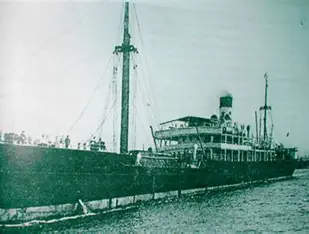
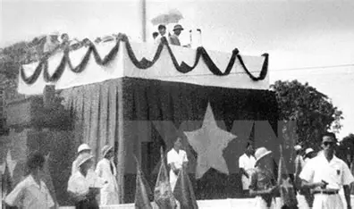
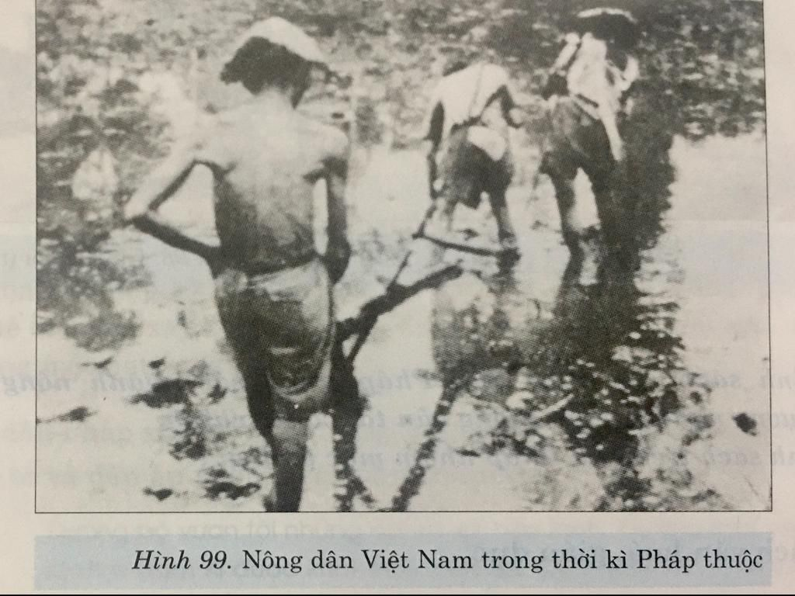
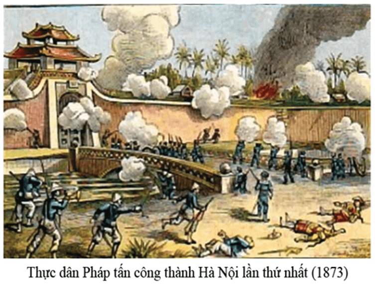
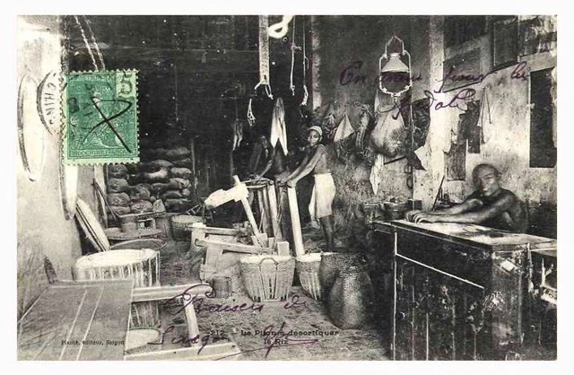
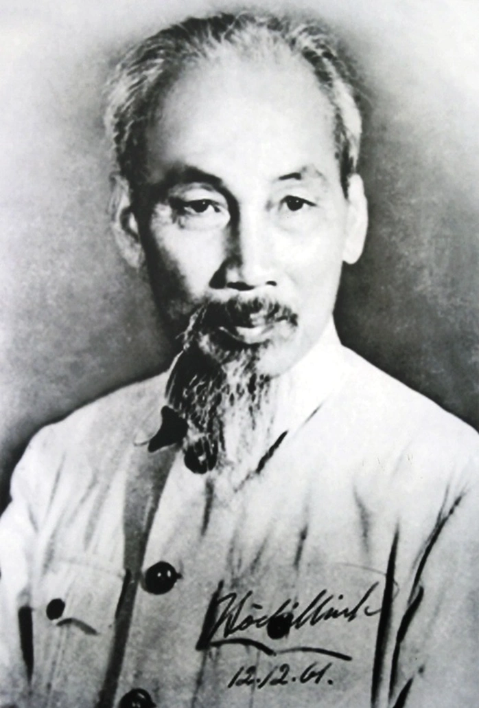
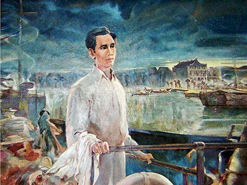
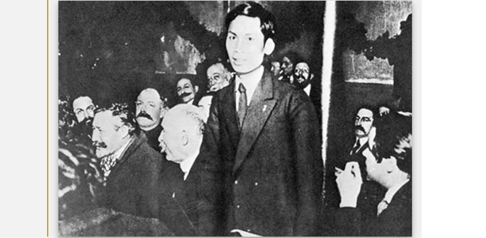
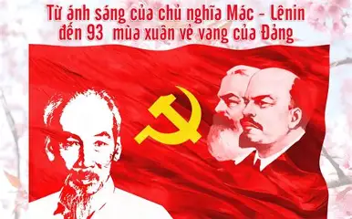

Không Gian Triển Lãm

Bến Nhà Rồng đầu thế kỷ XX

Tàu Amiral Latouche-Tréville
Nguyễn Ái Quốc tại Đại hội Đảng Xã hội Pháp

Bác Hồ đọc Tuyên ngôn Độc lập
Cuối thế kỷ XIX và đầu thế kỷ XX, Việt Nam chìm trong ách đô hộ của thực dân Pháp. Các phong trào yêu nước liên tiếp thất bại, đất nước rơi vào khủng hoảng về đường lối cứu nước.
Trong hoàn cảnh đó, Nguyễn Tất Thành đã quyết định ra đi tìm con đường cứu nước mới cho dân tộc Việt Nam.



Người lao động tại một khu sản xuất tại Chợ Lớn

Chủ tịch Hồ Chí Minh là vị lãnh tụ vĩ đại của dân tộc Việt Nam, người đã dành cả cuộc đời để đấu tranh cho độc lập và tự do của dân tộc.
Với lòng yêu nước sâu sắc và khát vọng giải phóng dân tộc, năm 1911, Nguyễn Tất Thành đã quyết định ra đi tìm con đường cứu nước, mở đầu cho hành trình thay đổi lịch sử Việt Nam.
Ngày 5/6/1911, Nguyễn Tất Thành rời Bến Nhà Rồng trên con tàu Amiral Latouche-Tréville để bắt đầu hành trình tìm đường cứu nước.


Người đã đi qua nhiều nơi trên thế giới như: Pháp, Anh, Mỹ và nhiều quốc gia khác để học hỏi, lao động và tìm hiểu con đường giải phóng dân tộc.
Nguyễn Ái Quốc tiếp cận chủ nghĩa Mác — Lênin, từ đó xác định con đường cách mạng vô sản là con đường đúng đắn để giải phóng dân tộc Việt Nam.

Bến Nhà Rồng đầu thế kỷ XX

Tàu Amiral Latouche-Tréville
Nguyễn Ái Quốc tại Đại hội Đảng Xã hội Pháp

Bác Hồ đọc Tuyên ngôn Độc lập
— Hồ Chí Minh